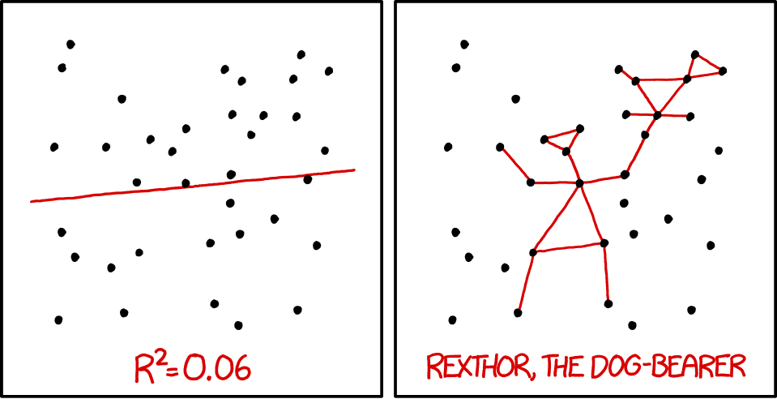

Optimization
|
Machine Learning with R The R Bootcamp |

|

from xkcd.com
Overview
By the end of this practical you will know how to:
- Use cross-validation to select optimal model tuning parameters for decision trees and random forests.
- Compare ‘standard’ regression with lasso and ridge penalised regression.
Tasks
A - Setup
Open your
TheRBootcampR project.Open a new R script. At the top of the script, using comments, write your name and the date.
## NAME
## DATE
## Optimizing practicalSave the script as a new file called
Optimization_practical.Rin the2_Codefolder.Using
library()load the packagestidyverse,caret,party,partykit.
# Load packages necessary for this script
library(tidyverse)
library(caret)
library(party)
library(partykit)B - Load the graduation data
- You will again begin by analyzing the graduation data. Read in the data sets
graduation_train.csvandgraduation_test.csvand convert all character to factors.
# Read college data
college_train <- read_csv(file = "1_Data/college_train.csv")
college_test <- read_csv(file = "1_Data/college_test.csv")
# Convert all character features to factor
college_train <- college_train %>%
mutate_if(is.character, factor)
college_test <- college_test %>%
mutate_if(is.character, factor)C - Setup trainControl
- Now, you finally make use of the train control object by specifying 10-fold cross-validation as the preferred optimization method in an object called
ctrl_cv. Specifically:
- set
method = "cv"to specify cross validation. - set
number = 10to specify 10 folds.
# Use 10-fold cross validation
ctrl_cv <- trainControl(method = "XX",
number = XX) # Use 10-fold cross validation
ctrl_cv <- trainControl(method = "cv",
number = 10) D - Regularized regression
Standard regression
- Begin by fitting a standard regression model predicting
Grad.Rateas a function of all other features. Specifically:
- set the formula to
Grad.Rate ~ .. - set the data to
college_train. - set the method to
"glm"for standard regression. - set the train control argument to
ctrl_cv.
# Standard regression
graduation_glm <- train(form = XX ~ .,
data = XX,
method = "XX",
trControl = XX)# Standard regression
graduation_glm <- train(form = Grad.Rate ~ .,
data = college_train,
method = "glm",
trControl = ctrl_cv)- What were your final regression model coefficients?
# Show final model
graduation_glm$finalModel
Call: NULL
Coefficients:
(Intercept) PrivateYes Apps Accept Enroll Top10perc
2.24e+01 9.09e-01 7.30e-04 -6.45e-04 9.08e-03 -1.24e-01
Top25perc F.Undergrad P.Undergrad Outstate Room.Board Books
3.76e-01 -1.54e-03 -1.31e-03 1.23e-03 1.59e-03 3.01e-04
Personal PhD Terminal S.F.Ratio perc.alumni Expend
-2.20e-03 6.24e-03 -4.15e-02 4.28e-01 1.96e-01 -9.01e-05
Degrees of Freedom: 499 Total (i.e. Null); 482 Residual
Null Deviance: 353000
Residual Deviance: 277000 AIC: 4620Ridge regression
- Before you can fit a regularized regression model like ridge regression, you need to determine a vector of lambda penalty values that the cross validation procedure will evaluate. Using the code below, create a vector called
lambda_veccontaining 100 values spanning a range from very close to0up to100.
# Vector of lambda values to try
lambda_vec <- 10 ^ (seq(-3, 2, length = 100))- Using
train(), fit a ridge regression model predictingGrad.Rateas a function of all features. This time make use of thetuneGrid, which will take adata.framespecifying the sets of tuning parameters to consider during cross validation. In addition toalpha = 0, which specifies a ridge penalty, addlambda = lambda_vec. Also, don’t forget to"center"and"scale"when using regularization.
# Ridge regression
graduation_ridge <- train(form = XX ~ .,
data = XX,
method = "XX",
trControl = XX,
preProcess = c("XX", "XX"), # Standardize
tuneGrid = data.frame(alpha = 0, # Ridge penalty
lambda = XX)) # Penalty weight# Ridge regression
graduation_ridge <- train(form = Grad.Rate ~ .,
data = college_train,
method = "glmnet",
trControl = ctrl_cv,
preProcess = c("center", "scale"), # Standardise
tuneGrid = data.frame(alpha = 0, # Ridge penalty
lambda = lambda_vec)) # Penalty weight- Print your
graduation_ridgeobject. Which lambda was selected as best performing?
graduation_ridgeglmnet
500 samples
17 predictor
Pre-processing: centered (17), scaled (17)
Resampling: Cross-Validated (10 fold)
Summary of sample sizes: 449, 449, 451, 451, 450, 449, ...
Resampling results across tuning parameters:
lambda RMSE Rsquared MAE
1.00e-03 24.3 0.176 19.5
1.12e-03 24.3 0.176 19.5
1.26e-03 24.3 0.176 19.5
1.42e-03 24.3 0.176 19.5
1.59e-03 24.3 0.176 19.5
1.79e-03 24.3 0.176 19.5
2.01e-03 24.3 0.176 19.5
2.26e-03 24.3 0.176 19.5
2.54e-03 24.3 0.176 19.5
2.85e-03 24.3 0.176 19.5
3.20e-03 24.3 0.176 19.5
3.59e-03 24.3 0.176 19.5
4.04e-03 24.3 0.176 19.5
4.53e-03 24.3 0.176 19.5
5.09e-03 24.3 0.176 19.5
5.72e-03 24.3 0.176 19.5
6.43e-03 24.3 0.176 19.5
7.22e-03 24.3 0.176 19.5
8.11e-03 24.3 0.176 19.5
9.11e-03 24.3 0.176 19.5
1.02e-02 24.3 0.176 19.5
1.15e-02 24.3 0.176 19.5
1.29e-02 24.3 0.176 19.5
1.45e-02 24.3 0.176 19.5
1.63e-02 24.3 0.176 19.5
1.83e-02 24.3 0.176 19.5
2.06e-02 24.3 0.176 19.5
2.31e-02 24.3 0.176 19.5
2.60e-02 24.3 0.176 19.5
2.92e-02 24.3 0.176 19.5
3.27e-02 24.3 0.176 19.5
3.68e-02 24.3 0.176 19.5
4.13e-02 24.3 0.176 19.5
4.64e-02 24.3 0.176 19.5
5.21e-02 24.3 0.176 19.5
5.86e-02 24.3 0.176 19.5
6.58e-02 24.3 0.176 19.5
7.39e-02 24.3 0.176 19.5
8.30e-02 24.3 0.176 19.5
9.33e-02 24.3 0.176 19.5
1.05e-01 24.3 0.176 19.5
1.18e-01 24.3 0.176 19.5
1.32e-01 24.3 0.176 19.5
1.48e-01 24.3 0.176 19.5
1.67e-01 24.3 0.176 19.5
1.87e-01 24.3 0.176 19.5
2.10e-01 24.3 0.176 19.5
2.36e-01 24.3 0.176 19.5
2.66e-01 24.3 0.176 19.5
2.98e-01 24.3 0.176 19.5
3.35e-01 24.3 0.176 19.5
3.76e-01 24.3 0.176 19.5
4.23e-01 24.3 0.176 19.5
4.75e-01 24.3 0.176 19.5
5.34e-01 24.3 0.176 19.5
5.99e-01 24.3 0.176 19.5
6.73e-01 24.3 0.176 19.5
7.56e-01 24.3 0.176 19.5
8.50e-01 24.3 0.176 19.5
9.55e-01 24.3 0.176 19.5
1.07e+00 24.3 0.176 19.5
1.20e+00 24.3 0.177 19.5
1.35e+00 24.3 0.177 19.5
1.52e+00 24.3 0.178 19.5
1.71e+00 24.3 0.178 19.5
1.92e+00 24.3 0.179 19.5
2.15e+00 24.3 0.180 19.5
2.42e+00 24.3 0.180 19.5
2.72e+00 24.3 0.181 19.5
3.05e+00 24.2 0.182 19.4
3.43e+00 24.2 0.183 19.4
3.85e+00 24.2 0.184 19.4
4.33e+00 24.2 0.184 19.4
4.86e+00 24.2 0.185 19.4
5.46e+00 24.2 0.186 19.4
6.14e+00 24.2 0.187 19.4
6.89e+00 24.2 0.188 19.4
7.74e+00 24.1 0.188 19.4
8.70e+00 24.1 0.189 19.4
9.77e+00 24.1 0.190 19.4
1.10e+01 24.1 0.190 19.4
1.23e+01 24.1 0.191 19.4
1.38e+01 24.1 0.192 19.4
1.56e+01 24.1 0.192 19.3
1.75e+01 24.1 0.193 19.3
1.96e+01 24.1 0.193 19.3
2.21e+01 24.1 0.193 19.4
2.48e+01 24.1 0.194 19.4
2.78e+01 24.2 0.194 19.4
3.13e+01 24.2 0.194 19.4
3.51e+01 24.2 0.194 19.4
3.94e+01 24.2 0.194 19.4
4.43e+01 24.2 0.194 19.4
4.98e+01 24.3 0.194 19.5
5.59e+01 24.3 0.194 19.5
6.28e+01 24.4 0.194 19.5
7.05e+01 24.4 0.193 19.6
7.92e+01 24.5 0.193 19.6
8.90e+01 24.5 0.193 19.7
1.00e+02 24.6 0.193 19.7
Tuning parameter 'alpha' was held constant at a value of 0
RMSE was used to select the optimal model using the smallest value.
The final values used for the model were alpha = 0 and lambda = 15.6.- Plot your
graduation_ridgeobject. What do you see? Does this match the plot match the value identified in the previous task?
# Plot graduation_ridge object
plot(XX)plot(graduation_ridge)
- What were your final regression model coefficients for the best lambda value? Find them by running the following code.
# Get coefficients from best lambda value
coef(graduation_ridge$finalModel,
graduation_ridge$bestTune$lambda)18 x 1 sparse Matrix of class "dgCMatrix"
1
(Intercept) 65.6024
PrivateYes 1.2076
Apps 0.7991
Accept 0.8294
Enroll 0.5064
Top10perc 1.5719
Top25perc 2.7798
F.Undergrad -0.3897
P.Undergrad -1.4911
Outstate 2.4885
Room.Board 1.5175
Books 0.0121
Personal -1.3764
PhD 0.4341
Terminal 0.3793
S.F.Ratio 0.4892
perc.alumni 1.9803
Expend 0.4385How do these coefficients compare to what you found in regular regression? Are they similar? Could the differences have something to do with the applied scaling?
Using
predict()save the fitted values ofgraduation_glmobject asglm_fit.
# Save fitted value
glm_fit <- predict(graduation_glm)Lasso regression
- Now fit a lasso regression model predicting
Grad.Rateas a function of all features. Setalpha = 1for the Lasso penalty and addlambda = lambda_vecas above.
# Lasso regression
graduation_lasso <- train(form = XX ~ .,
data = XX,
method = "XX",
trControl = XX,
preProcess = c("XX", "XX"), # Standardise
tuneGrid = data.frame(alpha = XX, # Lasso penalty
lambda = XX)) # Penalty weight# Lasso regression
graduation_lasso <- train(form = Grad.Rate ~ .,
data = college_train,
method = "glmnet",
trControl = ctrl_cv,
preProcess = c("center", "scale"), # Standardise
tuneGrid = data.frame(alpha = 1, # Lasso penalty
lambda = lambda_vec)) # Penalty weight- Print your
graduation_lassoobject. Which lambda was selected as best performing?
graduation_lassoglmnet
500 samples
17 predictor
Pre-processing: centered (17), scaled (17)
Resampling: Cross-Validated (10 fold)
Summary of sample sizes: 448, 449, 451, 448, 450, 451, ...
Resampling results across tuning parameters:
lambda RMSE Rsquared MAE
1.00e-03 24.5 0.1656 19.6
1.12e-03 24.5 0.1656 19.6
1.26e-03 24.5 0.1656 19.6
1.42e-03 24.5 0.1656 19.6
1.59e-03 24.5 0.1656 19.6
1.79e-03 24.5 0.1656 19.6
2.01e-03 24.5 0.1656 19.6
2.26e-03 24.5 0.1656 19.6
2.54e-03 24.5 0.1656 19.6
2.85e-03 24.5 0.1656 19.6
3.20e-03 24.5 0.1656 19.6
3.59e-03 24.5 0.1656 19.6
4.04e-03 24.5 0.1656 19.6
4.53e-03 24.5 0.1656 19.6
5.09e-03 24.5 0.1656 19.6
5.72e-03 24.5 0.1656 19.6
6.43e-03 24.5 0.1657 19.6
7.22e-03 24.5 0.1657 19.6
8.11e-03 24.5 0.1658 19.6
9.11e-03 24.5 0.1659 19.6
1.02e-02 24.5 0.1659 19.6
1.15e-02 24.5 0.1660 19.6
1.29e-02 24.5 0.1661 19.6
1.45e-02 24.5 0.1662 19.6
1.63e-02 24.5 0.1664 19.6
1.83e-02 24.5 0.1665 19.6
2.06e-02 24.5 0.1667 19.6
2.31e-02 24.5 0.1669 19.6
2.60e-02 24.5 0.1671 19.6
2.92e-02 24.5 0.1674 19.6
3.27e-02 24.5 0.1676 19.6
3.68e-02 24.4 0.1679 19.6
4.13e-02 24.4 0.1682 19.6
4.64e-02 24.4 0.1686 19.6
5.21e-02 24.4 0.1689 19.6
5.86e-02 24.4 0.1693 19.6
6.58e-02 24.4 0.1696 19.6
7.39e-02 24.4 0.1700 19.6
8.30e-02 24.4 0.1704 19.6
9.33e-02 24.4 0.1710 19.6
1.05e-01 24.4 0.1717 19.6
1.18e-01 24.4 0.1724 19.6
1.32e-01 24.3 0.1732 19.6
1.48e-01 24.3 0.1741 19.6
1.67e-01 24.3 0.1751 19.5
1.87e-01 24.3 0.1761 19.5
2.10e-01 24.3 0.1766 19.5
2.36e-01 24.3 0.1774 19.5
2.66e-01 24.2 0.1785 19.5
2.98e-01 24.2 0.1795 19.5
3.35e-01 24.2 0.1804 19.5
3.76e-01 24.2 0.1813 19.5
4.23e-01 24.2 0.1822 19.5
4.75e-01 24.2 0.1828 19.5
5.34e-01 24.2 0.1833 19.5
5.99e-01 24.2 0.1837 19.5
6.73e-01 24.2 0.1842 19.5
7.56e-01 24.2 0.1846 19.5
8.50e-01 24.2 0.1851 19.5
9.55e-01 24.2 0.1856 19.5
1.07e+00 24.2 0.1860 19.5
1.20e+00 24.2 0.1861 19.5
1.35e+00 24.2 0.1863 19.5
1.52e+00 24.2 0.1867 19.5
1.71e+00 24.2 0.1865 19.6
1.92e+00 24.2 0.1859 19.6
2.15e+00 24.3 0.1856 19.6
2.42e+00 24.3 0.1856 19.7
2.72e+00 24.3 0.1861 19.7
3.05e+00 24.4 0.1868 19.7
3.43e+00 24.4 0.1880 19.7
3.85e+00 24.5 0.1887 19.8
4.33e+00 24.6 0.1892 19.9
4.86e+00 24.7 0.1896 20.0
5.46e+00 24.9 0.1894 20.1
6.14e+00 25.1 0.1883 20.3
6.89e+00 25.4 0.1856 20.5
7.74e+00 25.7 0.1798 20.8
8.70e+00 26.1 0.1625 21.1
9.77e+00 26.5 0.0878 21.4
1.10e+01 26.5 NaN 21.5
1.23e+01 26.5 NaN 21.5
1.38e+01 26.5 NaN 21.5
1.56e+01 26.5 NaN 21.5
1.75e+01 26.5 NaN 21.5
1.96e+01 26.5 NaN 21.5
2.21e+01 26.5 NaN 21.5
2.48e+01 26.5 NaN 21.5
2.78e+01 26.5 NaN 21.5
3.13e+01 26.5 NaN 21.5
3.51e+01 26.5 NaN 21.5
3.94e+01 26.5 NaN 21.5
4.43e+01 26.5 NaN 21.5
4.98e+01 26.5 NaN 21.5
5.59e+01 26.5 NaN 21.5
6.28e+01 26.5 NaN 21.5
7.05e+01 26.5 NaN 21.5
7.92e+01 26.5 NaN 21.5
8.90e+01 26.5 NaN 21.5
1.00e+02 26.5 NaN 21.5
Tuning parameter 'alpha' was held constant at a value of 1
RMSE was used to select the optimal model using the smallest value.
The final values used for the model were alpha = 1 and lambda = 0.955.- Plot your
graduation_lassoobject. What do you see? Does this match the plot match the value identified in the previous task?
# Plot model object
plot(XX)plot(graduation_lasso)
- What were your final regression model coefficients for the best lambda value? Find them by running the following code.
# Get coefficients from best lambda value
coef(graduation_lasso$finalModel,
graduation_lasso$bestTune$lambda)18 x 1 sparse Matrix of class "dgCMatrix"
1
(Intercept) 65.602
PrivateYes .
Apps .
Accept 0.510
Enroll .
Top10perc .
Top25perc 5.363
F.Undergrad .
P.Undergrad -0.938
Outstate 4.430
Room.Board 1.050
Books .
Personal -1.080
PhD .
Terminal .
S.F.Ratio .
perc.alumni 1.646
Expend . - How do these coefficients compare to what you found for the regular and ridge regression? Have some features been set to 0?
Evaluate performance
- Store the training data and test data criterion (
Grad.Rate) ascriterion_trainandcriterion_test.
# store criteria
criterion_train <- college_train$Grad.Rate
criterion_test <- college_test$Grad.Rates 16. Using predict(), save the fitted values of your models as glm_fit, ridge_fit, and lasso_fit.
# store fitted values
glm_fit <- predict(graduation_glm)
ridge_fit <- predict(graduation_ridge)
lasso_fit <- predict(graduation_lasso)- Using
postResampleevaluate the fitting performance of your models. Which model has the best performance in fitting the training data?
# evaluate fit
postResample(pred = glm_fit, obs = criterion_train) RMSE Rsquared MAE
23.533 0.215 18.886 postResample(pred = ridge_fit, obs = criterion_train) RMSE Rsquared MAE
23.791 0.202 19.073 postResample(pred = lasso_fit, obs = criterion_train) RMSE Rsquared MAE
23.773 0.201 19.131 - Using
predict()andnewdata = college_test, save the predicted values of your models asglm_pred,ridge_pred, andlasso_pred.
# store predicted values
glm_pred <- predict(graduation_glm, newdata = college_test)
ridge_pred <- predict(graduation_ridge, newdata = college_test)
lasso_pred <- predict(graduation_lasso, newdata = college_test)- Using
postResampleevaluate the prediction performance of your models. Which model has the best performance in predicting the test data? Did the regularized regressions outperform the unregularized one?
# evaluate fit
postResample(pred = glm_pred, obs = criterion_test) RMSE Rsquared MAE
13.762 0.405 9.985 postResample(pred = ridge_pred, obs = criterion_test) RMSE Rsquared MAE
13.244 0.451 9.804 postResample(pred = lasso_pred, obs = criterion_test) RMSE Rsquared MAE
13.598 0.415 10.106 E - Trees
Decision tree
- It’s time to see what parameter tuning can do for decision trees and random forests. To do this, first, determine a vector of possible values for the complexity parameter
cpof decision trees. To this end, using the code below, create a vector calledcp_vecwhich contains 100 values between 0 and .2.
# Determine possible values for cp
cp_vec <- seq(from = 0, to = .2, length = 100)- Using
train(), fit a decision tree model calledgraduation_rpartpredictingGrad.Rateby all features. Again, assign a data frame totuneGridspecifying the possible tuning parameters, i.e.,cp = cp_vec.
# Decision tree
graduation_rpart <- train(form = Grad.part ~ .,
data = XX,
method = "XX",
trControl = XX,
tuneGrid = data.frame(cp = XX))# Decision tree
graduation_rpart <- train(form = Grad.Rate ~ .,
data = college_train,
method = "rpart",
trControl = ctrl_cv,
tuneGrid = data.frame(cp = cp_vec))- Print your
graduation_rpartobject. Whichcpwas selected as best performing?
graduation_rpartCART
500 samples
17 predictor
No pre-processing
Resampling: Cross-Validated (10 fold)
Summary of sample sizes: 449, 450, 451, 449, 450, 451, ...
Resampling results across tuning parameters:
cp RMSE Rsquared MAE
0.00000 28.6 0.08318 22.9
0.00202 28.6 0.08335 22.9
0.00404 28.6 0.08270 22.9
0.00606 28.4 0.08190 22.9
0.00808 28.1 0.08318 22.4
0.01010 27.3 0.09422 21.9
0.01212 26.5 0.10928 21.4
0.01414 26.4 0.11320 21.2
0.01616 26.5 0.10038 21.6
0.01818 26.3 0.10091 21.3
0.02020 26.0 0.10572 21.3
0.02222 26.1 0.09805 21.3
0.02424 26.2 0.08947 21.3
0.02626 26.1 0.08935 21.2
0.02828 26.1 0.08935 21.2
0.03030 26.1 0.08825 21.2
0.03232 26.1 0.08554 21.2
0.03434 26.1 0.08554 21.2
0.03636 26.4 0.06852 21.3
0.03838 26.4 0.07288 21.3
0.04040 26.6 0.06431 21.6
0.04242 26.4 0.06471 21.5
0.04444 26.5 0.05820 21.6
0.04646 26.5 0.05820 21.6
0.04848 26.5 0.05691 21.6
0.05051 26.5 0.05691 21.6
0.05253 26.5 0.05691 21.6
0.05455 26.5 0.05691 21.6
0.05657 26.5 0.05691 21.6
0.05859 26.5 0.05691 21.6
0.06061 26.5 0.05691 21.6
0.06263 26.5 0.05691 21.6
0.06465 26.5 0.05691 21.6
0.06667 26.5 0.05691 21.6
0.06869 26.5 0.05691 21.6
0.07071 26.5 0.05691 21.6
0.07273 26.5 0.05691 21.6
0.07475 26.5 0.05691 21.6
0.07677 26.5 0.05691 21.6
0.07879 26.5 0.05691 21.6
0.08081 26.5 0.05691 21.6
0.08283 26.5 0.05691 21.6
0.08485 26.5 0.05691 21.6
0.08687 26.5 0.05691 21.6
0.08889 26.5 0.05691 21.6
0.09091 26.5 0.05691 21.6
0.09293 26.5 0.05691 21.6
0.09495 26.5 0.05691 21.6
0.09697 26.5 0.05691 21.6
0.09899 26.5 0.05691 21.6
0.10101 26.5 0.05691 21.6
0.10303 26.5 0.05691 21.6
0.10505 26.9 0.03264 21.9
0.10707 26.9 0.03264 21.9
0.10909 27.1 0.01439 22.1
0.11111 27.1 0.01439 22.1
0.11313 27.1 0.01439 22.1
0.11515 27.1 0.01439 22.1
0.11717 27.1 0.00787 22.1
0.11919 27.1 0.00787 22.1
0.12121 27.1 0.00564 22.0
0.12323 27.1 0.00564 22.0
0.12525 27.0 0.00530 21.9
0.12727 27.0 0.00530 21.9
0.12929 26.9 0.00567 21.8
0.13131 26.8 0.00577 21.7
0.13333 26.5 NaN 21.5
0.13535 26.5 NaN 21.5
0.13737 26.5 NaN 21.5
0.13939 26.5 NaN 21.5
0.14141 26.5 NaN 21.5
0.14343 26.5 NaN 21.5
0.14545 26.5 NaN 21.5
0.14747 26.5 NaN 21.5
0.14949 26.5 NaN 21.5
0.15152 26.5 NaN 21.5
0.15354 26.5 NaN 21.5
0.15556 26.5 NaN 21.5
0.15758 26.5 NaN 21.5
0.15960 26.5 NaN 21.5
0.16162 26.5 NaN 21.5
0.16364 26.5 NaN 21.5
0.16566 26.5 NaN 21.5
0.16768 26.5 NaN 21.5
0.16970 26.5 NaN 21.5
0.17172 26.5 NaN 21.5
0.17374 26.5 NaN 21.5
0.17576 26.5 NaN 21.5
0.17778 26.5 NaN 21.5
0.17980 26.5 NaN 21.5
0.18182 26.5 NaN 21.5
0.18384 26.5 NaN 21.5
0.18586 26.5 NaN 21.5
0.18788 26.5 NaN 21.5
0.18990 26.5 NaN 21.5
0.19192 26.5 NaN 21.5
0.19394 26.5 NaN 21.5
0.19596 26.5 NaN 21.5
0.19798 26.5 NaN 21.5
0.20000 26.5 NaN 21.5
RMSE was used to select the optimal model using the smallest value.
The final value used for the model was cp = 0.0202.- Plot your
graduation_rpartobject. What do you see? Does this match the plot match the value identified in the previous task?
plot(graduation_rpart)
- Plot your final decision tree using the following code. Do you find the model sensible?
# Visualise your trees
plot(as.party(graduation_rpart$finalModel)) 
- How do the nodes in the tree compare to those in the ridge or lasso models?
Random forest
- Now onto fitting a random forest. Using the code below, create a vector called
mtry_veccontaining values from 1 to 5, the tuning parameter candidates for our random forest.
# mtry candidates
mtry_vec <- 1:5- Fit a random forest model predicting
Grad.Rateas a function of all features. Make sure to usemtry = mtry_vecwithin the data frame specifying thetuneGrid. This one might take a bit longer than usual.
# Random forest
graduation_rf <- train(form = XX ~ .,
data = XX,
method = "XX",
trControl = XX,
tuneGrid = data.frame(mtry = XX))# Random forest
graduation_rf <- train(form = Grad.Rate ~ .,
data = college_train,
method = "rf",
trControl = ctrl_cv,
tuneGrid = data.frame(mtry = mtry_vec))- Print your
graduation_rfobject. What do you see? Whichmtrywas selected as best performing?
graduation_rfRandom Forest
500 samples
17 predictor
No pre-processing
Resampling: Cross-Validated (10 fold)
Summary of sample sizes: 449, 449, 450, 451, 450, 449, ...
Resampling results across tuning parameters:
mtry RMSE Rsquared MAE
1 24.4 0.158 19.7
2 24.5 0.155 19.7
3 24.7 0.144 19.9
4 24.6 0.148 19.9
5 24.6 0.152 19.8
RMSE was used to select the optimal model using the smallest value.
The final value used for the model was mtry = 1.- Plot your
graduation_rfobject. What do you see? Does this match the plot match the value identified in the previous task?
plot(graduation_rf)
Evaluate performance
- Using
predict(), save the fitted values of your tree models asrpart_fitandrf_fit.
# store fitted values
rpart_fit <- predict(graduation_rpart)
rf_fit <- predict(graduation_rf)- Using
postResampleevaluate the fitting performance of your models. Which model has the best performance in fitting the training data? If you like compare to the regression models of the previous section.
# evaluate fit
postResample(pred = rpart_fit, obs = criterion_train) RMSE Rsquared MAE
24.039 0.181 19.511 postResample(pred = rf_fit, obs = criterion_train) RMSE Rsquared MAE
13.104 0.884 10.503 - Using
predict()andnewdata = college_test, save the predicted values of your models asrpart_pred, andrf_pred.
# store predicted values
rpart_pred <- predict(graduation_rpart, newdata = college_test)
rf_pred <- predict(graduation_rf, newdata = college_test)- Using
postResampleevaluate the prediction performance of your models. Which model has the best performance in predicting the test data? Did the tree models outperform the regularized regressions?
# evaluate fit
postResample(pred = rpart_pred, obs = criterion_test) RMSE Rsquared MAE
16.299 0.205 12.495 postResample(pred = rf_pred, obs = criterion_test) RMSE Rsquared MAE
13.66 0.41 10.06 X - Challenges: Explore tuning parameter grids
- The name
tuneGridalready suggests that one may want to vary multiple tuning parameters at the same time. A handy function helping in this isexpand.grid(), which will produce all compbinations of values of the vectors supplied as its arguments. Try, e.g.,expand.grid(a = c(1, 2), b = c(2, 3, 4)). The template below shows you how you can useexpand.grid()to specify multiple tuning parameters at the same time.
model <- train(form = XX ~ .,
data = XX,
method = "XX",
trControl = XX,
preProcess = c("XX", "XX"),
tuneGrid = expand.grid(parameter_1 = XX,
parameter_2 = XX)) Run and evaluate a regularized regression that uses cross validation to not only identify the best value for
lambdabut also the best value foralpha, e.g., usingalpha = c(0, .5, 1). This way you can let the procedure decide whether to use ridge, lasso or both.Run and evaluate a random forest while tuning not only
mtrybut alsontree, e.g., usingntree = c(100,500,1000). Tip: avoid high values forntreeormtry.As done in the previous sessions try predicting
Privaterather thanGrad.Rate. Note, this may require a different range of lambda values. You’ll figure it out.
Examples
# Model optimization with Regression
# Step 0: Load packages-----------
library(tidyverse) # Load tidyverse for dplyr and tidyr
library(caret) # For ML mastery
library(partykit) # For decision trees
library(party) # For decision trees
# Step 1: Load, clean, and explore data ----------------------
# training data
data_train <- read_csv("1_Data/diamonds_train.csv")
# test data
data_test <- read_csv("1_Data/diamonds_test.csv")
# Convert all characters to factor
# Some ML models require factors
data_train <- data_train %>%
mutate_if(is.character, factor)
data_test <- data_test %>%
mutate_if(is.character, factor)
# Explore training data
data_train # Print the dataset
View(data_train) # Open in a new spreadsheet-like window
dim(data_train) # Print dimensions
names(data_train) # Print the names
# Define criterion_train
criterion_train <- data_train$price
criterion_test <- data_test$price
# Step 2: Define training control parameters -------------
# Use 10-fold cross validation
ctrl_cv <- trainControl(method = "cv",
number = 10)
# Step 3: Train models: -----------------------------
# Normal Regression --------------------------
price_glm <- train(form = price ~ carat + depth + table + x + y,
data = data_train,
method = "glm",
trControl = ctrl_cv)
# Print key results
price_glm
# Coefficients
coef(price_glm$finalModel)
# Lasso --------------------------
# Vector of lambda values to try
lambda_vec <- 10 ^ seq(-3, 3, length = 100)
price_lasso <- train(form = price ~ carat + depth + table + x + y,
data = data_train,
method = "glmnet",
trControl = ctrl_cv,
preProcess = c("center", "scale"), # Standardise
tuneGrid = data.frame(alpha = 1, # Lasso
lambda = lambda_vec))
# Print key results
price_lasso
# Plot regularisation parameter versus error
plot(price_lasso)
# Print best regularisation parameter
price_lasso$bestTune$lambda
# Get coefficients from best lambda value
coef(price_lasso$finalModel,
price_lasso$bestTune$lambda)
# Ridge --------------------------
# Vector of lambda values to try
lambda_vec <- 10 ^ seq(-3, 3, length = 100)
price_ridge <- train(form = price ~ carat + depth + table + x + y,
data = data_train,
method = "glmnet",
trControl = ctrl_cv,
preProcess = c("center", "scale"), # Standardise
tuneGrid = data.frame(alpha = 0, # Ridge penalty
lambda = lambda_vec))
# Print key results
price_ridge
# Plot regularisation parameter versus error
plot(price_ridge)
# Print best regularisation parameter
price_ridge$bestTune$lambda
# Get coefficients from best lambda value
coef(price_ridge$finalModel,
price_ridge$bestTune$lambda)
# Decision Trees --------------------------
# Vector of cp values to try
cp_vec <- seq(0, .1, length = 100)
price_rpart <- train(form = price ~ carat + depth + table + x + y,
data = data_train,
method = "rpart",
trControl = ctrl_cv,
tuneGrid = data.frame(cp = cp_vec))
# Print key results
price_rpart
# Plot complexity parameter vs. error
plot(price_rpart)
# Print best complexity parameter
price_rpart$bestTune$cpDatasets
| File | Rows | Columns |
|---|---|---|
| college_train.csv | 50 | 20 |
| college_test.csv | 213 | 20 |
| college_train.csv | 500 | 18 |
| college_test.csv | 277 | 18 |
| house_train.csv | 5000 | 21 |
| house_test.csv | 1000 | 21 |
The
college_trainandcollege_testdata are taken from theCollegedataset in theISLRpackage. They contain statistics for a large number of US Colleges from the 1995 issue of US News and World Report.The
house_trainandhouse_testdata come from https://www.kaggle.com/harlfoxem/housesalesprediction
Variable description of college_train and college_test
| Name | Description |
|---|---|
Private |
A factor with levels No and Yes indicating private or public university. |
Apps |
Number of applications received. |
Accept |
Number of applications accepted. |
Enroll |
Number of new students enrolled. |
Top10perc |
Pct. new students from top 10% of H.S. class. |
Top25perc |
Pct. new students from top 25% of H.S. class. |
F.Undergrad |
Number of fulltime undergraduates. |
P.Undergrad |
Number of parttime undergraduates. |
Outstate |
Out-of-state tuition. |
Room.Board |
Room and board costs. |
Books |
Estimated book costs. |
Personal |
Estimated personal spending. |
PhD |
Pct. of faculty with Ph.D.’s. |
Terminal |
Pct. of faculty with terminal degree. |
S.F.Ratio |
Student/faculty ratio. |
perc.alumni |
Pct. alumni who donate. |
Expend |
Instructional expenditure per student. |
Grad.Rate |
Graduation rate. |
Variable description of house_train and house_test
| Name | Description |
|---|---|
price |
Price of the house in $. |
bedrooms |
Number of bedrooms. |
bathrooms |
Number of bathrooms. |
sqft_living |
Square footage of the home. |
sqft_lot |
Square footage of the lot. |
floors |
Total floors (levels) in house. |
waterfront |
House which has a view to a waterfront. |
view |
Has been viewed. |
condition |
How good the condition is (Overall). |
grade |
Overall grade given to the housing unit, based on King County grading system. |
sqft_above |
Square footage of house apart from basement. |
sqft_basement |
Square footage of the basement. |
yr_built |
Built Year. |
yr_renovated |
Year when house was renovated. |
zipcode |
Zip code. |
lat |
Latitude coordinate. |
long |
Longitude coordinate. |
sqft_living15 |
Living room area in 2015 (implies some renovations). This might or might not have affected the lotsize area. |
sqft_lot15 |
lot-size area in 2015 (implies some renovations). |
Functions
Packages
| Package | Installation |
|---|---|
tidyverse |
install.packages("tidyverse") |
caret |
install.packages("caret") |
partykit |
install.packages("partykit") |
party |
install.packages("party") |
Functions
| Function | Package | Description |
|---|---|---|
trainControl() |
caret |
Define modelling control parameters |
train() |
caret |
Train a model |
predict(object, newdata) |
stats |
Predict the criterion values of newdata based on object |
postResample() |
caret |
Calculate aggregate model performance in regression tasks |
confusionMatrix() |
caret |
Calculate aggregate model performance in classification tasks |
Resources
from github.com/rstudio